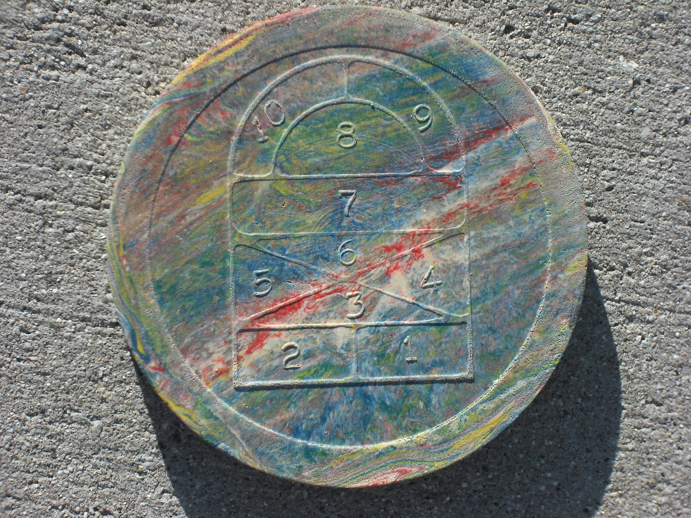
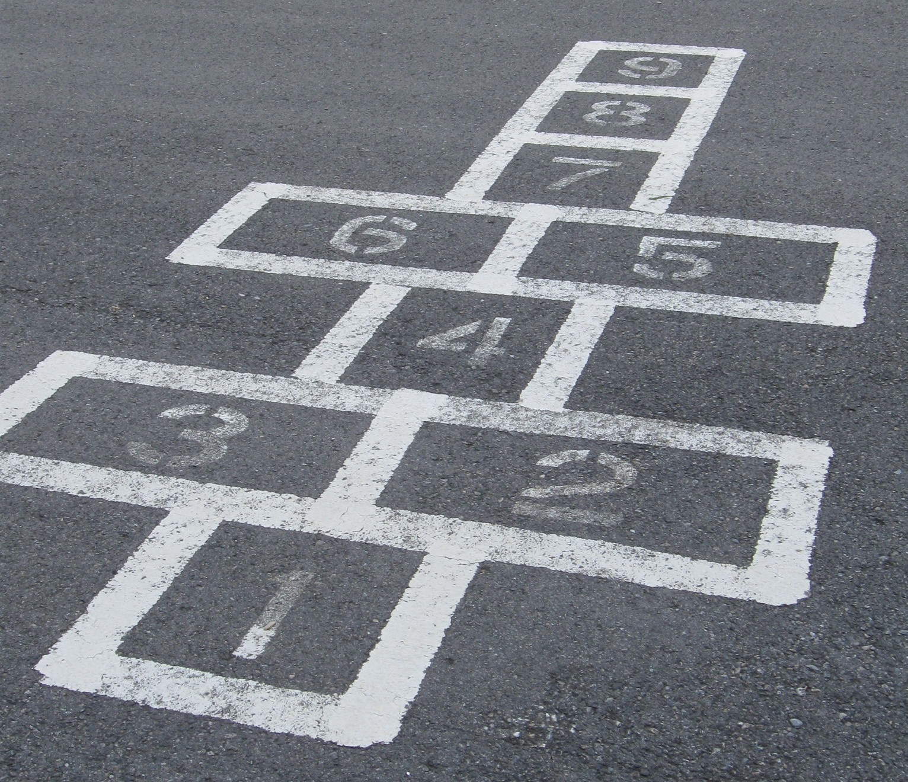
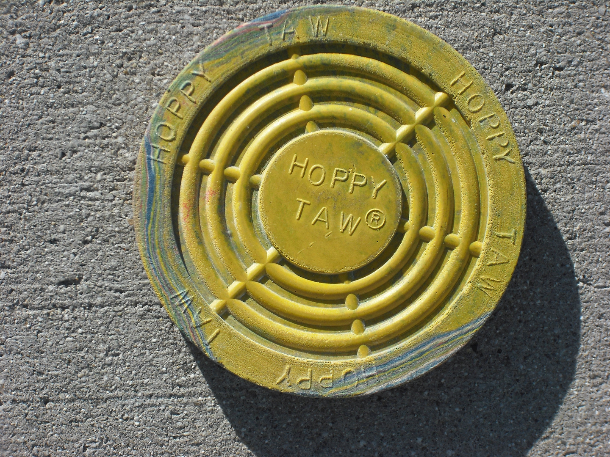

Hoppy Taw® has been the Official Hopscotch Game Marker since 1953

Hopscotch is the World's number 1 Playground Sport and nothing works better than Hoppy Taw®!

No need for rocks that bounce and roll away. Hoppy Taw® flies true and grips when it hits. It's made in the U.S. of safe resilient rubber. It's non Toxic. For Ages 6 and up

hoppytaws@gmail.com
Look for Hoppy Taws at these locations and get ready to play!
Available at:
Storybook Nook
Utah Idaho School Supply (All locations)
Tutoring Toy
Hammond Toys
Cabin Fever
Jolley's Pharmacy
Jolley's Corner
This is the Place Heritage Gift Shop
Homestead Gift Shop (Midway, UT)
(If you are a teacher check with your district warehouse to see if they are available.)
Step #1
From starting position ( standing on one foot behind baseline, this is the starting position of all turns), toss Hoppy Taw
Hop (to land on one foot) into square 1.
Take any number of hops in square without touching any line with hopping foot.
KickHoppy Taw
Finally, hop (do not step) out of square over and beyond the baseline landing on one foot, to exit the court.
NOTE- In each step, when a player hops out beyond the baseline landing on one foot, the player is finished with that step and does not have to remain on one foot. If no error the player continues to the next step.
Step #2
From starting position, toss Hoppy Taw
Hop into square 1 and then square 2.
Take any number of hops and kickHoppy Taw in square or directly out beyond baseline with hopping foot.
NOTE- If a Hoppy Taw hop into 1 and kickHoppy Taw
Step #3
From starting position, toss Hoppy Taw
From this position,, hop (not stepping) into squares landing with left foot in 1 and right foot in 2 at the same time.
Jump from both feet (not stepping) and land on either foot in triangle 3.
When ready, after pushing or sliding Hoppy Taw kickHoppy Taw
NOTE- If it stops in a square of smaller number without resting on a line it must be retrieved by kicking it out on the return trip.
Return by hopping into squares 1 and 2 with left foot with left foot in 2 and right foot in 1 at the same time, provided the Hoppy Taw Hoppy Taw hop first in 2, then 1, then out, hopping and kicking out the Hoppy Taw
Step #4
From the starting position, toss Hoppy Taw
Advance as in step No. 3 and hop into triangle 4.
Retrieve Hoppy Taw
Hop into triangle 3 and return as in Step No. 3.
Step #5
From starting position, toss Hoppy Taw
Advance as in step No. 4 and hop into Triangle 5.
KickHoppy Taw
Step #6
From starting position, toss Hoppy Taw
Advance as in step No. 3 to triangle 3.
Hop to land with left foot in triangle 4 and right foot in triangle 5 at the same time and jump from both feet to land on one foot in triangle 6.
KickHoppy Taw
Return by hopping to land with left foot in triangle 5 and right foot in triangle 4 at the same time, provided that the Hoppy Taw Jump into triangle 3 to land on one foot, then jump out beyond baseline to land on one foot.
Note: If Hoppy Taw, on being kicked from triangle 6 has landed in either 5 or 4, then do not hop from 6 into both triangles. Hop first into 5, then in 4, kicking out Hoppy Taw Hoppy Taw
Step #7
From starting position, toss Hoppy Taw
Advance as in step No. 6, and hop to land on both feet at the same time in rectangle 7.
Walk about in rectangle 7, sliding the Hoppy Taw
To kick the Taw out, raise one foot kicking the Taw out with the hopping foot. Return by hopping into triangle 6 and continue as before.
Step #8
From Starting Position, toss Hoppy Taw
Advance as in step No. 7 and when ready to progress to semi-circle 8 landing on one foot.
KickHoppy Taw Hoppy Taw
Return by hopping, to land on both feet at the same time in rectangle 7, and when ready continue on as in Step No. 7 remembering to hop, not step, out of 7.
Step #9
From starting position, toss Hoppy Taw
Advance as in step No. 8 then hop into arc 9 and kickhoppy taw
Return by hopping into semi-circle 8, then hop into rectangle 7 landing on both feet at the same time. Continue as before.
Step #10
From starting position, toss Hoppy Taw
Advance as in step 9 and then hop into arc 10 and kickHoppy Taw
Return by hopping into arc 9 and continue as in step 9.
Step #11
From the starting position, drop the Hoppy Taw
Hop to land on both feet at the same time in with left foot in arc 9 and right foot in arc 10.
Do about face and reverse position of feet by jumping in the air do one half turn (180 degrees) with the the body with left foot landing in arc 10 and right foot in arc 9.
Return by jumping to land on one foot in semi-circle 8. Then continue out of the court as before.
Fouls, Errors or Misses
For tossing the Hoppy Taw
If Hoppy Taw court, or does not stop completely within the space that the player is aiming for.
If the Hoppy Taw court beyond the baseline before the player leaves the court.
If the Hoppy taw court over the side lines when kicked.
If player touches any court line with footwear or any part of the body.
For any irregularity in progression or deviates from prescribed routing.
If player touches down more than one foot in any one square, triangle, semicircle, or arc. (Rectangle 7 in excluded.)
If player steps from one space to another.
If player lands on both feet when jumping or hopping out of the court.
Starting Position
Players shall stand in an upright hopping pose on one foot, behind the baseline of the court with the Hoppy Taw
The Basic Toss
Hold the Taw between your thumb and your finger tips with your palm up, rotate your hand in toward your body and then rotate your hand out toward the court. Release the Taw to land flat in that perfect landing spot within the space you are aiming for.
Hints For Play And To Win
Tossing the Taw into a space - To make it easier to reach the Taw when you bend over to pick the Taw up, toss the Taw to that perfect landing spot.
Hopping and jumping within the court - Keep your heels up off the line, stay on the front of your feet.
Step #1
From the starting position, toss Hoppy Taw
If the Taw stays within the square and not touching a line, hop landing on one foot in square 2.
Hop landing on one foot in triangle 3.
Hop landing on both feet at the same time with your left foot in triangle 4 and right foot in triangle 5.
Jump landing on one foot in triangle 6.
Hop landing on both feet at the same time in the rectangle 7. - NOTE - You are free to walk and move about the 7 spacewithout penalty.
When ready raise one foot and hop landing on one in semicircle 8.
Hop landing on both feet at the same time with your left foot in arc 9 and right foot in arc 10.
Jump into the air and while in the air reverse the position of your feet by turning your body one half turn (180 degrees) landing on both feet at the same time with your left foot in arc 10 and your right foot in arc 9.
To return back down the court, jump landing on one foot in semi-circle 8.
Hop landing on both feet at the same time in rectangle 7. As before you are free to move about this space.
When ready, raise one foot and hop, landing on one foot in the triangle 6.
Hop landing on both feet at the same time with your left foot in triangle 5 and right foot in triangle 4.
Jump landing on one foot in triangle 3.
Hop landing on one foot in square 2.
Bend over and pick up the Taw with one hand.
With the Taw in hand hop landing on one foot in square 1.
Hop (do not step) over and beyond baseline landing on one foot in square 1.
NOTE- In each step, when a player hops out beyond baseline landing on one foot, the player is finished with that step and does not have to remain on one foot. If no error the player continues to the next step.
Step #2
Toss Hoppy Taw
Hop landing on one foot in square 1.
Hop landing on one foot in triangle 3.
As before continue up the court, turn at the arc and return down the court stopping in triangle 3.
Bend over and pick up the Taw.
With Taw in hand hop landing on both feet at the same time with your left foot in square 2 and right foot in square 1.
As before continue and exit the court.
Step #3
Toss Hoppy Taw
Hop landing on both feet at the same time with your left foot in square 1 and your right foot in square 2.
Jump over triangle 3 landing on both feet at the same time with your foot in triangle 4 and right foot in triangle 5.
As before continue up the court and return down the court stopping in triangle 4 and 5.
Bend over and pick up the Taw.
With Taw in hand jump landing on one foot in triangle 3.
As before continue and exit court.
Step #4
Toss Hoppy Taw
As before hop into squares 1 and 2.
Jump landing on one foot in triangle 3.
Hop landing on one foot in triangle 5.
Hop landing on one foot in triangle 6.
As before continue up the court and return down the court stopping in triangle 6.
Hop landing on one foot in triangle 5.
Bend over and pick up the Taw.
With Taw in hand hop landing on one foot in triangle 4.
Hop landing on one foot in triangle 3.
As before continue and exit the court.
Step #5
Toss hoppy Taw
As before proceed up the court stopping in triangle 3.
Hop landing one foot in triangle 4.
Hop landing on one foot in triangle 6.
As before continue up the court and return down the court stopping in triangle 6.
Bend over and pick up the Taw.
With Taw in hand hop landing with both feet at the same time your left foot in triangle 5 and right foot in triangle 4.
As before continue and exit the court.
Step #6
Toss hoppy Taw
As before proceed up the court stopping in triangle 3.
With Taw in hand hop landing with both feet at the same time your left foot in triangle 4 and right foot in triangle 5.
Jump over triangle 6 landing on both feet at the same time in rectangle 7.
As before continue up and return down the court stopping in rectangle 7. As before you are free to move about this space.
When ready raise one foot, bend over and pick up the Taw.
Step #7
Toss Hoppy Taw
As before proceed up the court stopping in triangles 4 and 5.
Jump landing on one foot in triangle 6.
Hop over rectangle 7 landing on one foot in semi-circle 8.
As before hop into arc 9 and 10, jump and turn 180 degrees.
Jump landing on one foot in semi-circle 8.
Bend over and pick up the Taw.
With Taw in hand hop landing on both feet at the same time in rectangle 7.
As before continue and exit.
Step #8
Toss Hoppy Taw
As before proceed up the court stopping in rectangle 7.
When ready raise one foot, hop over semi-circle 8 landing on both feet at the same time with your left foot in arc 9 and right foot in arc 10.
As before jump and turn 180 degrees.
Bend over and pick up the Taw.
With the Taw in hand jump landing on one foot in semi-circle 8.
As before continue down and exit the court.
Step #9
Toss Hoppy Taw
As before proceed up the court stopping in semi-circle 8.
Hop landing on one foot in arc 10.
Bend over and pick up the Taw.
With Taw in hand hop landing on one foot in arc 9.
Hop landing on one foot in semi-circle 8.
As before continue down and exit the court.
Step #10
Toss Hoppy Taw
As before proceed up the court stopping in semi-circle 8.
Hop landing on one foot in arc 9.
Bend over and pick up the Taw.
Hop landing on one foot in arc 10.
Jump into the air and while in the air position your body to land on both feet at the same time with your left foot in arc 10 and right foot in arc 9.
As before continue down and exit the court.
Fouls, Errors or Misses
For tossing the Hoppy Taw
If Hoppy Taw court, or does not stop completely within the space that the player is aiming for.
If the Hoppy Taw court beyond the baseline before the player leaves the court.
If the Hoppy taw court over the side lines when kicked.
If player touches any court line with footwear or any part of the body.
For any irregularity in progression or deviates from prescribed routing.
If player touches down more than one foot in any one square, triangle, semicircle, or arc. (Rectangle 7 in excluded.)
If player steps from one space to another.
If player lands on both feet when jumping or hopping out of the court.
For orders or questions on tournaments please contact us at